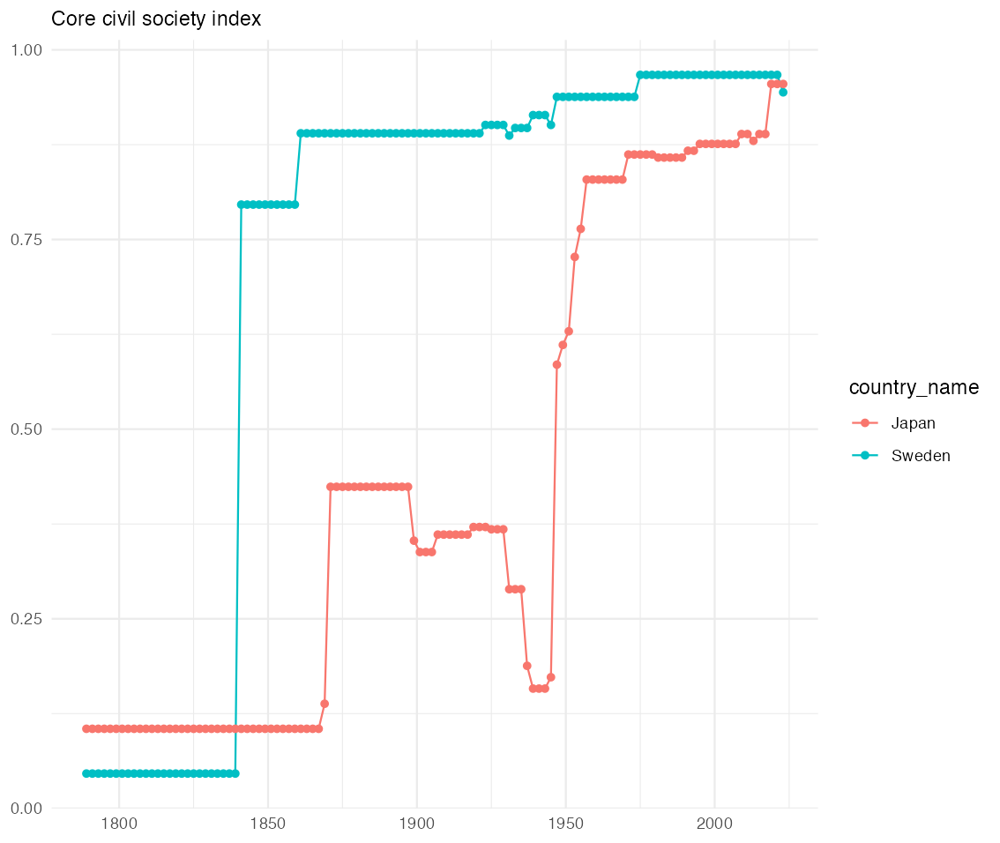
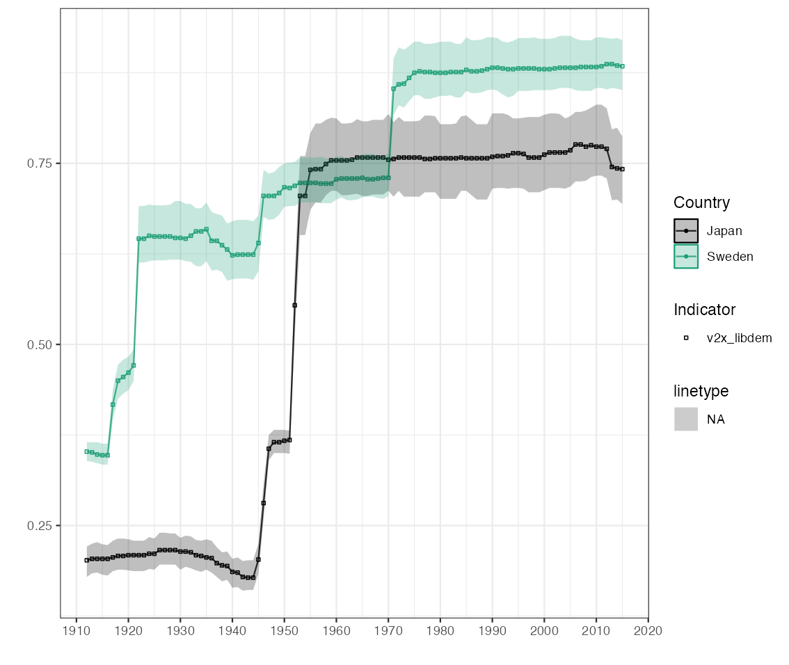

# devtoolsのインストール
install.packages("devtools")
# devtoolsのロード
library(devtools)
# vdemdataのインストール
devtools::install_github("vdeminstitute/vdemdata")
# vemdemdataのロード
library(vdemdata)4 民主主義・国家データ
中国をはじめとする新興経済の台頭とともに国家（政府）の役割がふたたび注目されつつあります. 他方で権威主義的な国家の台頭は民主主義の優位性が失われつつある、という論調もみられるようになりました1.こうした問題を考える上でも「国家」や「民主主義」を測る指標が必要となります.そこで本項ではそうしたデータを提供するデータベースをいくつか紹介します.
4.1 「民主主義」を測る - vdemdata
スウェーデンのイェーテボリ大学政治学科のV-Dem研究所のVarieties of Democracy(V-Dem)データベースは大規模な社会科学データベースです。データセットの最新バージョンv14は1789年から2019年までの202カ国をカバーしています。本データベースはその名が示すとおり、民主主義をめぐるデータセットを提供しています。アンケート調査にもとづいたミクロデータが基礎となっていますが、それらのデータから作成されたマクロデータが提供されています。
データはcsv, Stata,Spssの３つの形式で提供されています。また、本研究所じしんがデータセットRパッケージvdemdataを公開しています。これは最新のV-Dem (Varieties of Democracy) とV-partyのデータパッケージです。くわえて検索、グラフ作成機能も提供しています.
4.1.1 vdemdataパッケージのインストール
Rパッケージvdemdataパッケージは開発版であるため,vdemdataは同研究所のGithubサイトからインストールする必要があります。このため、最初に、devtoolsをインストールします。
本パッケージが提供する基本的な関数は以下のとおりです.使い方については後で説明します.
vdem:データセットを読み込みます.
vparty: V-Partyデータセットを読み込みます.
var_info :コードブックで指定された特定の変数の基本情報をコンソールに表示します.
find_var:キーワードで変数を検索します.
fill_vars: 特定の選挙の変数をしまします.
グラフ作成機能も提供されています.
- plot_indicator: V-Dem指標のグラフを描きます.
4.1.2 vdemdataパッケージの利用法
4.1.2.1 データを読み込む - vdem
V-Demデータセットの読み込むためにはvdem関数を使います.ここでは読み込んだデータセットをv_dataという名前をつけたオブジェクトに容れます.
v_data <- vdem[Environment]をみると，V-Demデータセットは非常に大きく、27,734の観察値、4,607の変数を持つことが分かります.ここからデータを探すことは大変です.最初に, vdemdataのcodebookを利用した方法を紹介しましょう.
データフレームv_dataは4,607の変数を有します.ほとんどの変数名がV-Dem特有の変数名です。たとえばv2x_polyarchyという変数がありますが、これが何を表現しているかは分かりません。そうした情報はcodebookから得られます.
Vdemdataには、変数の情報を提供する簡易版codebookがついています。codebookじたい859の観察値、46の変数から構成されるdata.frameデータフレームです。View()関数を使ってデータフレームcodebookの変数名を一覧表示してみてください. ここではさらにarrange(name)で変数nameをベースに並べ替えています。
View(codebook) |> arrange(name)たとえば，並び替えたデータフレームcodebookの最初の変数は変数tagによればv2smdefabuですが，これが何を表現する変数かはname変数によって理解することができます。“Abuse of defamation and copyright law by elites”
このように変数の意味を理解するためには、vdemdata付属のcodebookでも十分ですが、pdf版のフルバージョンもあります.また変数の情報はvar_info()関数を使っても得ることができます.
var_info("変数タグtag名")“変数タグtag名”にはV-demデータセットの変数名もしくはcodebookのtag名を入力します.たとえば，v2x_feduniを情報を取得してみましょう。詳細な説明が表示されます。
var_info("v2x_feduni)4.1.2.2 データを探す - find_var()
codebookをベースにデータを探す方法の他に、find_var()関数を利用した検索方法もあります.むしろ,この方法の方が便利です. find_()の使い方は次のようになります.
find_var("検索キーワード")たとえば「市民社会」“civil society”をキーワードにデータを探してみましょう.
find_var("civil society") |>
View()ここでは検索結果をパイプ”|>“を使ってView( )関数に渡しています。その結果，７行（変数の数）×47列（それぞれの変数の説明）のデータフレームが表示されます。
name変数列をみると、7行目に“Core civil society index”というデータがあることが分かります。じっさいにデータをダウンロードするためには変数列tagの値が必要となります. この変数に対応するtag名はv2xcs_ccsi です. また変数列questionをみると、このデータが“How robust is civil society?”に対する回答にもとづいていることが分かります。さらに変数列scaleからは0から1の値を取る間隔データでることも分かります。
それではこのCore civil society indexデータを取得してみましょう。じっさいにはvdemによってすでにV-demのデータセットをダウンロードしています。したがってこのデータセットを格納したデータフレームv_dataからCore civil society indexデータを抽出することになります.
Core civil society index はv_dataではtag名すなわちv2xcs_ccsiで表現されています。そこで実際の作業としてはこの変数列を抽出することになります。変数列を選択し、抽出するためにはselect()関数を利用します. あわせて国名country_name、国コードcountry_text_id、年yearといった一連の変数も選択・抽出します. そして結果をcivil_societyと名前をつけたオブジェクトに容れます。
civil_society <- v_data |>
select("v2xcs_ccsi", "country_name", "country_text_id", "year")これでV-demの提供する市民社会指標core civil society indexが取得できました.つぎに市民社会指標の推移をグラフに描いてみましょう.
4.1.2.3 民主主義データの可視化
市民社会
市民社会指標core civil society indexの推移を描くために，ここではさらにcountry_name変数を利用し、日本とスウェーデンだけを取り出してみましょう. このためにfilter( )関数を利用します.
civil_society <- v_data |>
select("v2xcs_ccsi", "country_name", "country_text_id", "year") |>
# filter()関数を利用
filter(country_name == c("Japan","Sweden"))ggplot2を利用し、日本とスウェーデンの市民社会指標Core civil society indexの推移を比較してみましょう。
ggplot(data = civil_society, mapping = aes(x = year,y = v2xcs_ccsi))+
geom_line(aes(color = country_name))+
geom_point(aes(color = country_name))+
labs(
subtitle = "Core civil society index",
x = NULL,
y = NULL
)+
theme_minimal()これを実行すると，次のようなグラフが描かれます。

容易に想像がつくことですが、明治維新から第２次以前の期間においてはスウェーデンと日本は大きく異なっています.第２次世界大戦後にようやくスウェーデンに近づいていきます.
リベラル・デモクラシー
同じグラフはvdemdataパッケージのplot_indicator()関数でも描くことができます. plot_indicator()関数の基本的な使い方は次のようになります.
plot_indicator(
indicator = "",
countries = NULL,
min_year = min(vdemdata::vdem$year),
max_year = max(vdemdata::vdem$year),
uncertainty = TRUE
)plot_indicator()がとる５つの引数を説明しておきましょう.
indicator = ” “:” “にV-Demデータセットのtag名（文字列ベクトル）を入力します. tag名についてはcodebookを参照してください.
countries= プロットされる国名（文字列ベクトル）を指定します. ただし、国名はV-Demデータの
country_name列の国だけが指定可能です. NULLの場合、グローバルな平均がプロットされます。min_year = プロットする期間の開始年(数値)を指定します. なお、min(vdemdata::vdem$year)は、min()関数を使ってvdemデータセットの年の最小値を返すよう指示することになります。
max_year = プロットする期間の最終年(数値)を指定します.
uncertainty = TRUEもしくはFALSEの論理値をとり、TRUEを指定したとき、利用可能な場合には信頼区間がポイント推定値に追加されます.
plot_indictor()によるグラフ作成ではリベラル・デモクラシー指標”v2x_libdem”を利用してみましょう。
plot_indicator(indicator= "v2x_libdem", countries = c("Japan", "Sweden"),min_year = 1912, max_year = 2015)これによって以下のグラフが出力されます。

スェーデンと比較すると、第２次世界大戦以前の日本がいかにリベラル・デモクラシーからかけ離れていたか、また、1945年に劇的に政治体制が変化したか、ということを理解できます.
4.2 「政府の質」を測る - rgog
2004年にBo Rothstein教授とSören Holmberg教授によって設立されたQuality of Government(QoG)研究所は優れた政府Good Governanceと政府の質Quality of Governanceの原因、結果、性質に関するデータを提供しています.
QoG研究所が提供するデータセットは次の5つです.
QoG基本データ(Basic Data)
QoG標準データ(Standard Data)
QoG OECDデータ(OECD Data)
QoG 専門家サーベイ・データ(Expert Survey Data)
QoG EU 地域データ(Eu Regional Data)
オープン政府データと関連トピックに関するRパッケージ開発者のコミュニティrOpengoveによって、QoGのデータを取得するためのRパッケージrqogが開発されています.rqogは、read_qog()関数によりBasic、Standard、OECDデータセットへのアクセスを提供しています.Standardデータには、Basicデータと同じ指標（367変数）に加え、約1600の指標が追加されています。Basicデータ、Standardデータともに、194の国がカバーされています.rqogは、デフォルトでは、大部分の指標と国の様々な期間の時系列を持つ縦断的データセットを利用します.
Footnotes
成田悠輔「民主主義の未来(上) 優位性後退、崩壊の瀬戸際に」『日本経済新聞』2021年8月21日付.↩︎